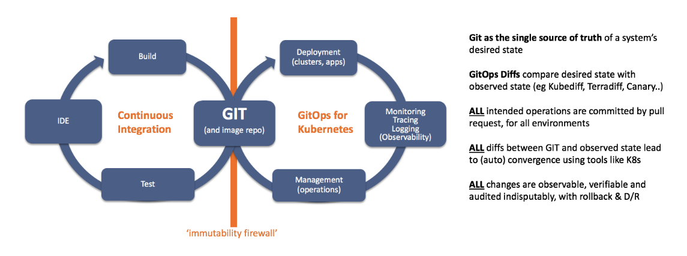

Flux v2 walkthrough
Jul 29th, 2021 Marco Amador
GitOps
GitOps is a way of managing your infrastructure and applications so that whole system is described declaratively and version controlled (most likely in a Git repository), and having an automated process that ensures that the deployed environment matches the state specified in a repository.
GitOps
Flux v2
Core Concepts
Sources
A Source defines the origin of a repository containing the desired state of the system and the requirements to obtain.
All sources are specified as Custom Resources in a Kubernetes cluster, examples of sources are GitRepository, HelmRepository and Bucket resources.
Kustomization
The Kustomization custom resource represents a local set of Kubernetes resources (e.g. kustomize overlay) that Flux is supposed to reconcile in the cluster.
Reconciliation
Reconciliation refers to ensuring that a given state (e.g. application running in the cluster, infrastructure) matches a desired state declaratively defined somewhere (e.g. a Git repository).
Flux v2
Core Components
Source controller
The main role of the source management component is to provide a common interface for artifacts acquisition. The source API defines a set of Kubernetes objects that cluster admins and various automated operators can interact with to offload the Git and Helm repositories operations to a dedicated controller.
Kustomize controller
The kustomize-controller is a Kubernetes operator, specialized in running continuous delivery pipelines for infrastructure and workloads defined with Kubernetes manifests and assembled with Kustomize.
Helm controller
The Helm Controller is a Kubernetes operator, allowing one to declaratively manage Helm chart releases with Kubernetes manifests.
Image Reflector and Image Automation controllers
The image-reflector-controller and image-automation-controller work together to update a Git repository when new container images are available.
Notification controller
The Notification Controller is a Kubernetes operator, specialized in handling inbound and outbound events.
- Discord
- Microsoft Teams
- Rocket
- Google Chat
- Webex
- Sentry
- Azure Event Hub
- Generic webhook
Flux v2 architecture

Main Git source
apiVersion: source.toolkit.fluxcd.io/v1beta1
kind: GitRepository
metadata:
name: flux-system
namespace: flux-system
spec:
gitImplementation: libgit2
interval: 1m0s
ref:
branch: master
secretRef:
name: flux-system
url: ssh://git@ssh.dev.azure.com/v3/anovateam/Mapleleaf/gitops-live
Main kustomization
apiVersion: kustomize.toolkit.fluxcd.io/v1beta1
kind: Kustomization
metadata:
name: flux-system
namespace: flux-system
spec:
interval: 10m0s
path: ./clusters/staging/northeurope
prune: true
sourceRef:
kind: GitRepository
name: flux-system
Flux resources
kubectl get kustomization --all-namespaces
kubectl get gitrepositories --all-namespaces
kubectl get helmrepository --all-namespaces
Flux CLI
flux get kustomizations --all-namespaces
flux get sources git --all-namespaces
flux get sources helm --all-namespaces
Flux reconciliation
flux reconcile kustomization core -n core
flux reconcile source git core -n core
flux reconcile helmrelease identity -n core
GitOps Repos
- gitops-live
- gitops-core
- gitops-transform
- gitops-data
Ownership
| Repo | Team | Project |
|---|---|---|
| gitops-live | Infra | Platform |
| gtiops-core | Core / SM | Core and SM |
| gitops-transform | Transform | Transform |
| gitops-data | Data | Data |
gitops-live
├── clusters
│ ├── production
│ │ ├── eastus
│ │ └── norteurope
│ └── staging
│ ├── eastus
│ └── northeurope
├── operations
│ ├── manifests
│ │ ├── production
│ │ └── staging
│ └── releases
│ ├── production
│ └── staging
├── policies
└── tenants
├── base
│ ├── core
│ ├── data
│ └── transform
├── production
│ ├── eastus
│ └── northeurope
└── staging
├── eastus
└── northeurope
gitops-live
├── clusters
│ ├── production
│ │ ├── eastus
│ │ │ ├── flux-system
│ │ │ ├── operations.yaml
│ │ │ ├── policies.yaml
│ │ │ └── tenants.yaml
│ │ └── norteurope
│ └── staging
│ ├── eastus
│ └── northeurope
├── operations
│ ├── manifests
│ │ ├── production
│ │ └── staging
│ └── releases
│ ├── production
│ └── staging
├── policies
└── tenants
├── base
│ ├── core
│ ├── data
│ └── transform
├── production
│ ├── eastus
│ └── northeurope
└── staging
├── eastus
└── northeurope
Tenant git source
apiVersion: source.toolkit.fluxcd.io/v1beta1
kind: GitRepository
metadata:
name: core
namespace: core
spec:
gitImplementation: libgit2
interval: 5m0s
ref:
branch: master
url: ssh://git@ssh.dev.azure.com/v3/anovateam/Mapleleaf/gitops-core
Tenant kustomization
apiVersion: kustomize.toolkit.fluxcd.io/v1beta1
kind: Kustomization
metadata:
name: core
namespace: core
spec:
force: false
interval: 5m0s
path: ./staging/eastus
prune: true
serviceAccountName: core
sourceRef:
kind: GitRepository
name: core
gitops-<tenant>
├── _automation
├── _sources
├── base
│ ├── kustomization.yaml
│ ├── my-release.yaml
│ └── my-other-release.yaml
├── production
│ ├── eastus
│ │ ├── kustomization.yaml
│ │ ├── my-release-patch.yaml
│ │ ├── my-release-patch-generated.yaml
│ │ ├── my-other-release-patch.yaml
│ │ └── my-other-release-patch-generated.yaml
│ └── northeurope
│ ├── kustomization.yaml
│ ├── my-release-patch.yaml
│ ├── my-release-patch-generated.yaml
│ ├── my-other-release-patch.yaml
│ └── my-other-release-patch-generated.yaml
└── staging
├── eastus
│ ├── kustomization.yaml
│ ├── my-release-patch.yaml
│ ├── my-release-patch-generated.yaml
│ ├── my-other-release-patch.yaml
│ └── my-other-release-patch-generated.yaml
└── northeurope
├── kustomization.yaml
├── my-release-patch.yaml
├── my-release-patch-generated.yaml
├── my-other-release-patch.yaml
└── my-other-release-patch-generated.yaml
Helm release
app-base.yaml
apiVersion: helm.toolkit.fluxcd.io/v2beta1
kind: HelmRelease
metadata:
name: my-app
spec:
releaseName: my-app
serviceAccountName: my-tenant
chart:
spec:
chart: anova-k8s-deployment
sourceRef:
kind: GitRepository
name: anova-helm-chart-stable
interval: 5m
install:
remediation:
retries: 3
values:
migrations:
enabled: true
app-patch.yaml
apiVersion: helm.toolkit.fluxcd.io/v2beta1
kind: HelmRelease
metadata:
name: my-app
spec:
values:
environment: staging
region: ue
image:
repository: acrmapleleafstag.azurecr.io/my-app
tag: 0.1.82 # {"$imagepolicy": "data:staging-ue-my-app:tag"}
env:
- name: LOGLEVEL
value: DEBUG
kustomization.yaml
apiVersion: kustomize.config.k8s.io/v1beta1
kind: Kustomization
namespace: data
resources:
- app-base.yaml
patchesStrategicMerge:
- app-patch.yaml
- app-patch-generated.yaml
kustomize build .
apiVersion: helm.toolkit.fluxcd.io/v2beta1
kind: HelmRelease
metadata:
name: my-app
spec:
releaseName: my-app
serviceAccountName: my-tenant
chart:
spec:
chart: anova-k8s-deployment
sourceRef:
kind: GitRepository
name: anova-helm-chart-stable
interval: 5m
install:
remediation:
retries: 3
values:
migrations:
enabled: true
environment: staging
region: ue
image:
repository: acrmapleleafstag.azurecr.io/my-app
tag: 0.1.82 # {"$imagepolicy": "data:staging-ue-my-app:tag"}
env:
- name: LOGLEVEL
value: DEBUG
Image Automation

Image policy
The ImagePolicy type gives rules for selecting a “latest” image from a scanned ImageRepository. This can be used to drive automation, as with the image-automation-controller; or more generally, to inform other processes of the state of an image repository.
Image repository
The ImageRepository API specifies how to scan OCI image repositories. A repository is a collection of images – e.g., alpine, as opposed to a specific image, e.g., alpine:3.1. ImagePolicy objects can then refer to an ImageRepository in order to select a specific image from those scanned.
Image update automation
The ImageUpdateAutomation type defines an automation process that will update a git repository, based on image policiy objects in the same namespace.
Image automation
❯ kubectl get imagerepository my-app
NAME LAST SCAN TAGS
my-app 2021-07-14T18:42:53Z 20
❯ kubectl get imagerepository my-app -oyaml
apiVersion: image.toolkit.fluxcd.io/v1beta1
kind: ImageRepository
metadata:
name: my-app
namespace: data
spec:
image: myacr.azurecr.io/my-app
interval: 5m0s
❯ k get imageupdateautomation tenant -n tenant -oyaml
piVersion: image.toolkit.fluxcd.io/v1beta1
kind: ImageUpdateAutomation
metadata:
name: tenant
namespace: tenant
spec:
git:
checkout:
ref:
branch: master
commit:
author:
email: fluxcdbot@users.noreply.github.com
name: fluxcdbot
messageTemplate: |
An automated update from FluxBot
[ci skip]
interval: 5m
sourceRef:
kind: GitRepository
name: tenant
❯ git log
commit bcb890b12f623a901295fad68a92f899d7a1279d (HEAD -> master, origin/master, origin/HEAD)
Author: fluxcdbot
Date: Thu Jul 15 07:39:26 2021 +0000
An automated update from FluxBot
[ci skip]
❯ git whatchanged -m -n 1 -p bcb890b12f623a901295fad68a92f899d7a1279d
commit bcb890b12f623a901295fad68a92f899d7a1279d (HEAD -> master, origin/master, origin/HEAD)
Author: fluxcdbot
Date: Thu Jul 15 07:39:26 2021 +0000
An automated update from FluxBot
[ci skip]
diff --git a/production/eastus/entities-digestor-patch.yaml b/production/eastus/entities-digestor-patch.yaml
index f36aefd..63dc20e 100644
--- a/production/eastus/entities-digestor-patch.yaml
+++ b/production/eastus/entities-digestor-patch.yaml
@@ -8,7 +8,7 @@ spec:
region: ue
image:
repository: acrmapleleafprod.azurecr.io/entities-digestor
- tag: 0.1.18 # {"$imagepolicy": "data:production-ue-entities-digestor:tag"}
+ tag: 0.1.19 # {"$imagepolicy": "data:production-ue-entities-digestor:tag"}
Image automation
❯ flux get image repository -n core apistatus
NAME READY MESSAGE LAST SCAN SUSPENDED
apistatus True successful scan, found 1 tags 2021-07-26T12:51:27+01:00 False
❯ flux get image policy -n core staging-ue-apistatus
NAME READY MESSAGE LATEST IMAGE
staging-ue-apistatus True Latest image tag for 'acrmapleleafstag.azurecr.io/apistatus' resolved to: 1.0.27 acrmapleleafstag.azurecr.io/apistatus:1.0.27
❯ flux get image update -n core
NAME READY MESSAGE LAST RUN SUSPENDED
core True no updates made; last commit 69ac834 at 2021-07-26T11:07:39Z 2021-07-26T12:53:32+01:00 False
Image rollback
Base
image:
automation:
enabled: true
semver:
expr: x.x.x
Patch in environment
image:
repository: acrmapleleafstag.azurecr.io/assetsreports
tag: 0.1.8 # {"$imagepolicy": "core:staging-ue-assetsreportsapi:tag"}
automation:
semver:
expr: 0.1.8 # temporarily fixing this tag
OSS Contributors
“Give GitOps and Kubernetes and I'll scale the World.”
MArchimedes